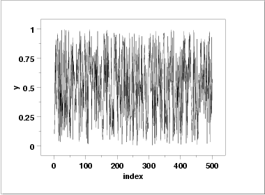
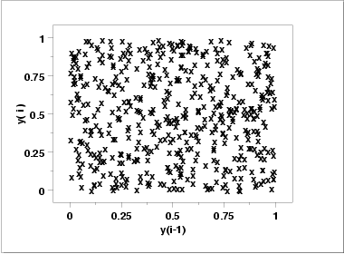
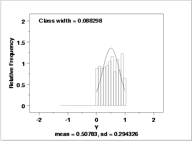
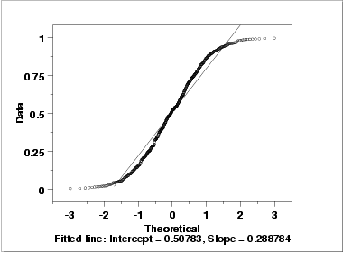
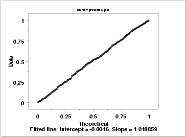

1.4. EDA Case Studies
1.4.2. Case Studies
1.4.2.2. Uniform Random Numbers
1.4.2.2.2. |
Graphical Output and Interpretation |
- Determine if the univariate model:
-
\( Y_{i} = C + E_{i} \)
is appropriate and valid.
- Determine if the typical underlying assumptions for an
"in control" measurement process are valid. These assumptions
are:
- random drawings;
- from a fixed distribution;
- with the distribution having a fixed location; and
- the distribution having a fixed scale.
- Determine if the confidence interval
-
\( \bar{Y} \pm 2s/\sqrt{N} \)
is appropriate and valid where s is the standard deviation of the original data.
- The run sequence plot
(upper left) indicates that the data do
not have any significant shifts in location or scale over time.
- The lag plot
(upper right) does not indicate any non-random
pattern in the data.
- The histogram
shows that the frequencies are relatively
flat across the range of the data. This suggests that the
uniform distribution might provide a better distributional
fit than the normal distribution.
- The normal probability plot verifies that an assumption of normality is not reasonable. In this case, the 4-plot should be followed up by a uniform probability plot to determine if it provides a better fit to the data. This is shown below.



This plot shows that a normal distribution is a poor fit. The flatness of the histogram suggests that a uniform distribution might be a better fit.

Since the histogram from the 4-plot suggested that the uniform distribution might be a good fit, we overlay a uniform distribution on top of the histogram. This indicates a much better fit than a normal distribution.

As with the histogram, the normal probability plot shows that the normal distribution does not fit these data well.

Since the above plots suggested that a uniform distribution might be appropriate, we generate a uniform probability plot. This plot shows that the uniform distribution provides an excellent fit to the data.
The bootstrap plot is an ideal tool for this purpose. The following plots show the bootstrap plot, with the corresponding histogram, for the mean, median, mid-range, and median absolute deviation.
Using the mean, the location estimate is 0.507 and a 95% confidence interval for the mean is (0.482,0.534). Using the mid-range, the location estimate is 0.499 and the 95% confidence interval for the mid-range is (0.497,0.503).
Although the values for the location are similar, the difference in the uncertainty intervals is quite large.
Note that in the case of a uniform distribution it is known theoretically that the mid-range is the best linear unbiased estimator for location. However, in many applications, the most appropriate estimator will not be known or it will be mathematically intractable to determine a valid condfidence interval. The bootstrap provides a method for determining (and comparing) confidence intervals in these cases.